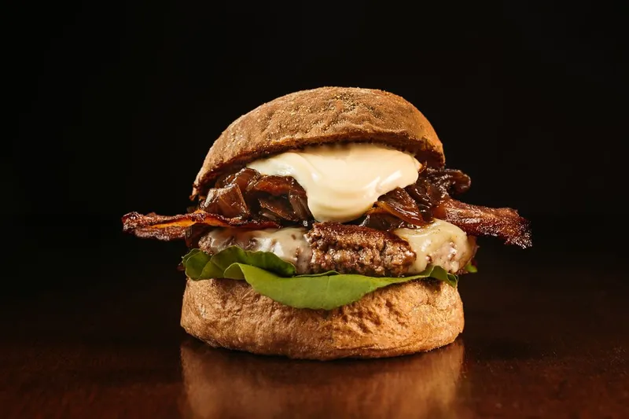
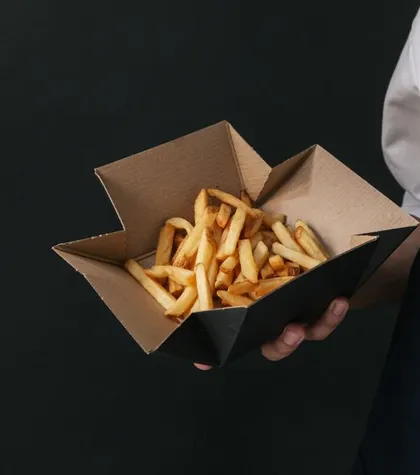
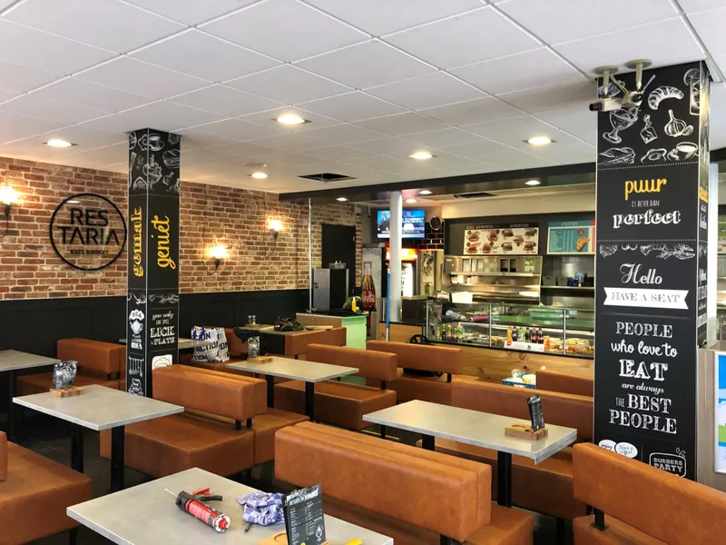
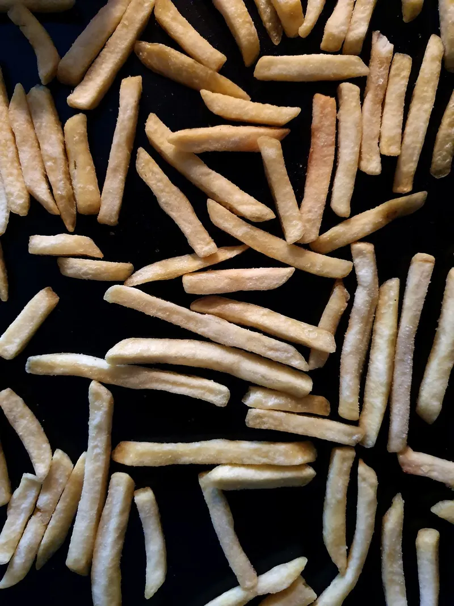
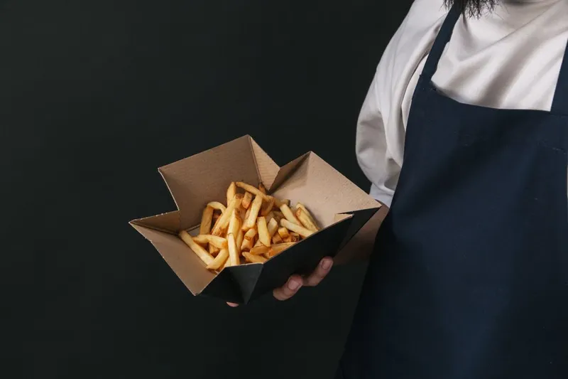

Vlees met een verhaal
De burgers zijn van Hereford, 100% scharrelrundvlees. Waar het kan kiezen we Beter Leven-producten zonder dat jij meer betaalt, en we werken met lokale leveranciers.
Do t/m za open tot 01:30, zie de openingstijden onderaan
1983aan de Visstraat sinds
1.340Google-reviews, 4,1 gemiddeld
7 op 7dagen per week open
01:30sluiten we pas, do t/m za
Van patatje oorlog tot kapsalon: 18 soorten frites, tientallen snacks en een eigen halal-lijn.
vanaf 2,50Hereford scharrelrund op een briochebroodje, van The Basic tot de Baconburger.
vanaf 6,5023 koude en warme broodjes op vers stokbrood, plus vier panini's.
vanaf 5,75Complete schotels met frites en salade: saté, schnitzels, kibbeling, stoofvlees en meer.
vanaf 4,00Milkshakes, sundaes, softijs en frozen cola, voor erbij of als toetje.
vanaf 1,50Van frites tot schnitzel: ruim 150 gerechten online, met de prijzen van de zaak erbij.
Zo snel mogelijk, of op het kwartier dat jou uitkomt. We bereiden het vers op dat moment.
Je bestelling staat klaar op Visstraat 12. Noem je naam en je kunt zo weer door.
Je bestelt rechtstreeks bij ons, zonder bezorgplatform ertussen.

Loop binnen en bestel aan de toonbank, zoals altijd. Reserveren hoeft nooit.
Zeven dagen per week open, Visstraat 12
Kees Kroket is een cafetaria met de ruimte van een restaurant: leren banken, krijtborden aan de muur en een terras aan de Visstraat.


De burgers zijn van Hereford, 100% scharrelrundvlees. Waar het kan kiezen we Beter Leven-producten zonder dat jij meer betaalt, en we werken met lokale leveranciers.

We frituren volgens het keurmerk Verantwoord Frituren en verpakken duurzaam. Op de MVO-scorekaart van de Restaria-formule scoren we daar de volle punten op.

Het kidsmenu (8,00) komt met frites, een snack naar keuze, een ijsje en een verrassing. Van elk verkocht kidsmenu gaat 0,50 naar KiKa.
Ik kom hier al mijn hele leven en blijf terugkomen. Dat zegt eigenlijk genoeg. Kees Kroket is voor mij een vertrouwde plek waar je terechtkunt voor lekker eten en een goede service.Patrick Hendriks
De gezellige inrichting en vriendelijke medewerkers zorgen voor een fijne sfeer. Natuurlijk draait het vooral om het eten: de kroketten zijn heerlijk krokant van buiten en rijk van smaak van binnen.Sari Bali
Een goede cafetaria met een ruim assortiment en voldoende zitplaatsen. Kees Kroket ligt aan de Visstraat in Den Bosch en is inmiddels echt een begrip in de stad.Marcel Hulsman
Oh my god, de lekkerste patat hete kip die ik heb gegeten! Een heerlijke combinatie en zeker iets wat ik opnieuw zou bestellen. Ook de sfeer is prettig en gezellig.Yolanda Hilgersom
Extra fijn is dat je hier ook nog terechtkunt voor een lekkere hap wanneer veel andere zaken al gesloten zijn.Caspar Zinger
De eggburger en frikandel XXL speciaal waren erg lekker. Ook de milkshakes waren heerlijk romig. Zeker een aanrader: de volgende keer bestellen we weer de frikandel XXL speciaal!Yelle Ang
Visstraat 12, midden in het centrum van Den Bosch. Bestellen kan via Thuisbezorgd, bellen mag natuurlijk ook.
Openingstijden staan hieronder